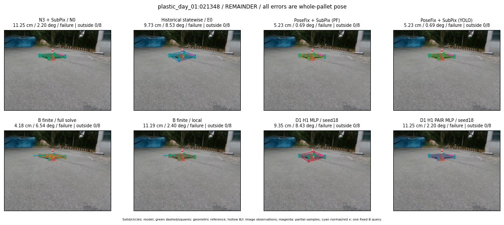

Whole-pallet pose errors; reference is a fixed geometric annotation, not certified physical GT.

Scores are uncalibrated logits. N0 retention is a numerical pose alias; it differs from H0 none or B fallback. B/I and profiles in baseline/B panels are original observations; L panels use new D1 observations. Only one deterministic supported B query is shown in a thumbnail; full support counts are below. Grey privacy rectangles edit the display copy only and are unrelated to O states; all observations were measured on original pixels. Thumbnails use JPEG quality85; detailed scientific panels are PNG.
| Method | Whole pose / cm, deg | Actual source | Selected ID | Score | Archived candidates | Eligible | N0 retained | H0 none | Fallback | Finite profiles |
|---|---|---|---|---|---|---|---|---|---|---|
| Raw YOLO + F | 25.80 cm / 2.57 deg / failure | OTHER | None | N/A | N/A | N/A | False | N/A | None | N/A |
| N3 + SubPix / N0 | 11.25 cm / 2.20 deg / failure | N0 | None | N/A | N/A | N/A | True | N/A | None | N/A |
| Historical statewise / E0 | 9.73 cm / 8.53 deg / failure | E0_REGENERATED | None | N/A | N/A | N/A | False | N/A | False | N/A |
| PoseFix raw | 23.90 cm / 1.50 deg / failure | OTHER | None | N/A | N/A | N/A | False | N/A | None | N/A |
| PoseFix + SubPix (PF) | 5.23 cm / 0.69 deg / failure | OTHER | None | N/A | N/A | N/A | False | N/A | False | historical support records 9; finite audit N/A |
| PoseFix + SubPix (YOLO) | 5.23 cm / 0.69 deg / failure | OTHER | None | N/A | N/A | N/A | False | N/A | False | historical support records 9; finite audit N/A |
| Historical L, seed18 | 11.25 cm / 2.20 deg / failure | N0 | N0 | N/A | 37 | 36 | True | True | True | N/A |
| Historical B fixed bank | 19.31 cm / 86.67 deg / failure | OTHER | G10/SWAPPED_WD/sample/1 | N/A | N/A | N/A | False | N/A | False | N/A |
| Historical B full | 38.57 cm / 81.43 deg / failure | OTHER | NEW/B/SWAPPED_WD/h0/G13/SWAPPED_WD/sample/0/PROPOSED_NATIVE_YAW_0 | N/A | N/A | N/A | False | N/A | False | N/A |
| Historical edge full | 3064.06 cm / 122.75 deg / failure | OTHER | NEW/edge/ORIGINAL_WD/h3/G10/SWAPPED_WD/sample/3/PROPOSED_NATIVE_YAW_3 | N/A | N/A | N/A | False | N/A | False | N/A |
| Historical AB full | 38.57 cm / 81.43 deg / failure | OTHER | NEW/AB/SWAPPED_WD/h0/G13/SWAPPED_WD/sample/0/PROPOSED_NATIVE_YAW_0 | N/A | N/A | N/A | False | N/A | False | N/A |
| B finite / fixed bank | 19.31 cm / 86.67 deg / failure | OTHER | G10/SWAPPED_WD/sample/1 | N/A | N/A | N/A | False | N/A | False | 4/4 |
| B finite / full solve | 4.18 cm / 6.54 deg / failure | OTHER | NEW_FINITE/B/ORIGINAL_WD/h0/G13/ORIGINAL_WD/sample/0/PROPOSED_NATIVE_YAW_0 | N/A | N/A | N/A | False | N/A | False | 4/4 |
| B finite / local | 11.19 cm / 2.40 deg / failure | OTHER | NEW_FINITE/B/ORIGINAL_WD/h0/N0_LOCAL_SAME_PHYSICAL_POSE/ORIGINAL_WD | N/A | N/A | N/A | False | N/A | False | 4/4 |
| Edge finite / full solve | 38.85 cm / 164.31 deg / failure | OTHER | G10/SWAPPED_WD/sample/3 | N/A | N/A | N/A | False | N/A | False | 4/4 |
| D0 H0 MLP / seed18 | 11.25 cm / 2.20 deg / failure | N0 | N0 | 1.1518208980560303 | 17 | 16 | True | True | True | N/A |
| D0 H0 MLP / seed19 | 11.25 cm / 2.20 deg / failure | N0 | N0 | 1.9042105674743652 | 17 | 16 | True | True | True | N/A |
| D0 H0 MLP / seed20 | 11.25 cm / 2.20 deg / failure | N0 | N0 | -0.8336259126663208 | 17 | 16 | True | True | True | N/A |
| D0 H1 MLP / seed18 | 9.35 cm / 8.43 deg / failure | OTHER | G10/ORIGINAL_WD/selected | -4.426377773284912 | 17 | 16 | False | False | False | N/A |
| D0 H1 MLP / seed19 | 9.35 cm / 8.43 deg / failure | OTHER | G10/ORIGINAL_WD/selected | -4.327521800994873 | 17 | 16 | False | False | False | N/A |
| D0 H1 MLP / seed20 | 9.35 cm / 8.43 deg / failure | OTHER | G10/ORIGINAL_WD/selected | -4.9203715324401855 | 17 | 16 | False | False | False | N/A |
| D1 H0 MLP / seed18 | 11.25 cm / 2.20 deg / failure | N0 | N0 | 5.7870683670043945 | 17 | 16 | True | True | True | N/A |
| D1 H0 MLP / seed19 | 11.25 cm / 2.20 deg / failure | N0 | N0 | 5.729385852813721 | 17 | 16 | True | True | True | N/A |
| D1 H0 MLP / seed20 | 11.25 cm / 2.20 deg / failure | N0 | N0 | 5.4841132164001465 | 17 | 16 | True | True | True | N/A |
| D1 H1 MLP / seed18 | 9.35 cm / 8.43 deg / failure | OTHER | G10/ORIGINAL_WD/selected | -1.955029845237732 | 17 | 16 | False | False | False | N/A |
| D1 H1 MLP / seed19 | 9.35 cm / 8.43 deg / failure | OTHER | G10/ORIGINAL_WD/selected | -1.8680808544158936 | 17 | 16 | False | False | False | N/A |
| D1 H1 MLP / seed20 | 3.23 cm / 0.80 deg / success | OTHER | P1/ORIGINAL_WD/selected | -2.307044267654419 | 17 | 16 | False | False | False | N/A |
| D1 H1 ROLE AFFINE / seed18 | 11.25 cm / 2.20 deg / failure | N0 | N0 | -0.3642391264438629 | 17 | 16 | True | False | False | N/A |
| D1 H1 ROLE AFFINE / seed19 | 11.25 cm / 2.20 deg / failure | N0 | N0 | 0.09796375036239624 | 17 | 16 | True | False | False | N/A |
| D1 H1 ROLE AFFINE / seed20 | 11.25 cm / 2.20 deg / failure | N0 | N0 | -0.21988172829151154 | 17 | 16 | True | False | False | N/A |
| D1 H1 PAIR MLP / seed18 | 11.25 cm / 2.20 deg / failure | N0 | N0 | -1.6119829416275024 | 17 | 2 | True | False | False | N/A |
| D1 H1 PAIR MLP / seed19 | 11.25 cm / 2.20 deg / failure | N0 | N0 | -1.6833425760269165 | 17 | 2 | True | False | False | N/A |
| D1 H1 PAIR MLP / seed20 | 11.25 cm / 2.20 deg / failure | N0 | N0 | -1.7858777046203613 | 17 | 2 | True | False | False | N/A |
| D1 H1 PAIR ROLE AFFINE / seed18 | 11.25 cm / 2.20 deg / failure | N0 | N0 | -0.5195287466049194 | 17 | 2 | True | False | False | N/A |
| D1 H1 PAIR ROLE AFFINE / seed19 | 11.25 cm / 2.20 deg / failure | N0 | N0 | -0.5543419718742371 | 17 | 2 | True | False | False | N/A |
| D1 H1 PAIR ROLE AFFINE / seed20 | 11.25 cm / 2.20 deg / failure | N0 | N0 | -0.520394504070282 | 17 | 2 | True | False | False | N/A |
| Regenerated common E0 | 9.73 cm / 8.53 deg / failure | E0_REGENERATED | E0_REGENERATED | N/A | N/A | N/A | False | N/A | False | N/A |